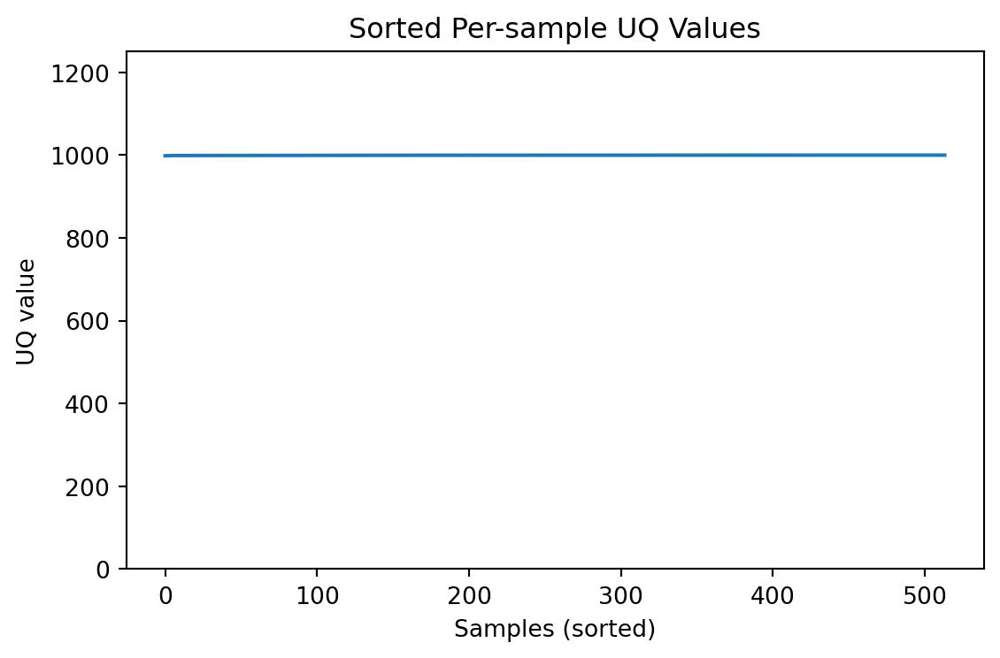
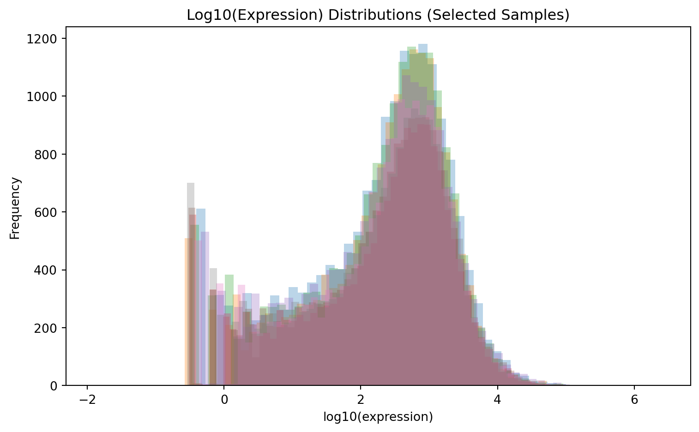
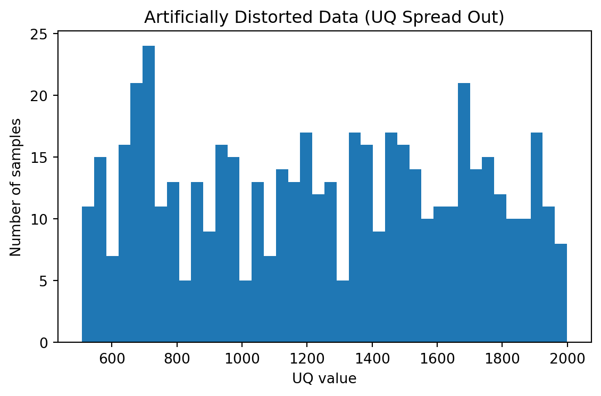
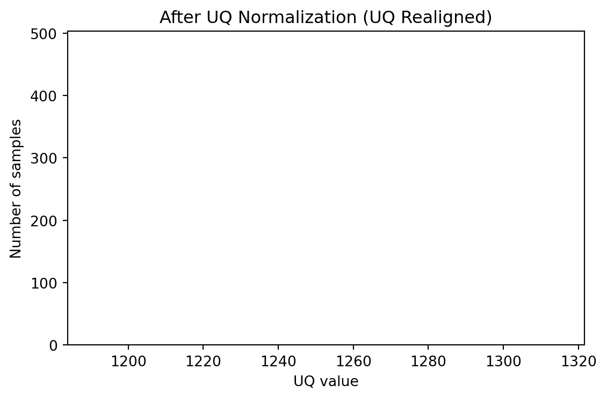
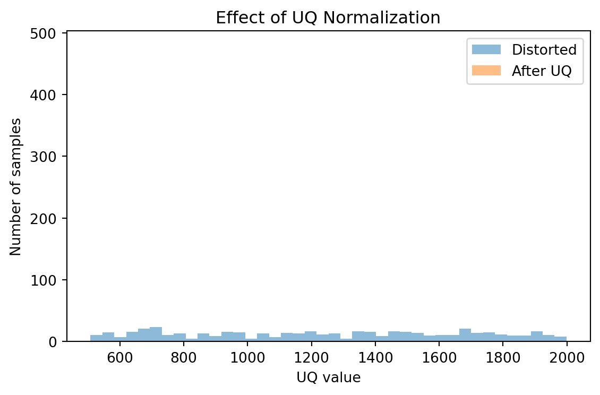
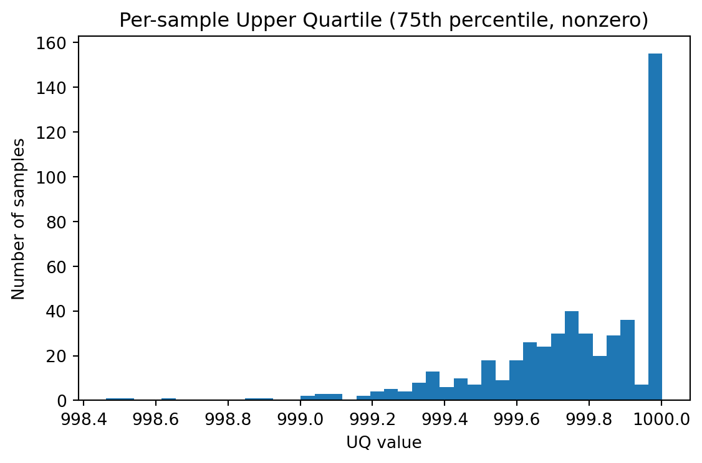
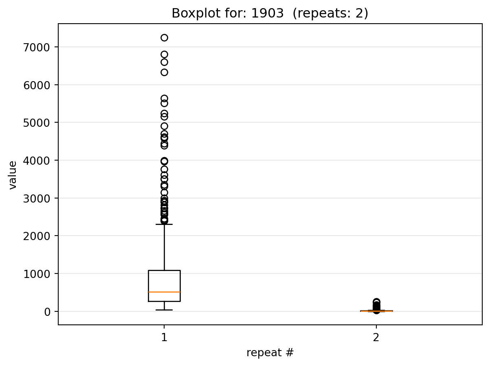
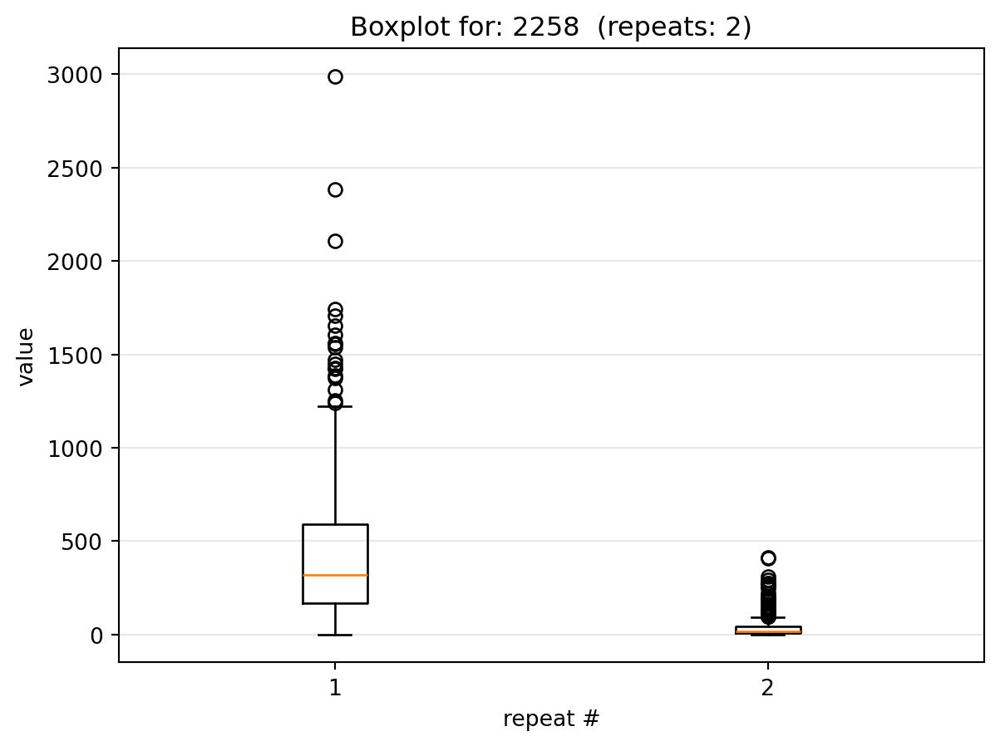
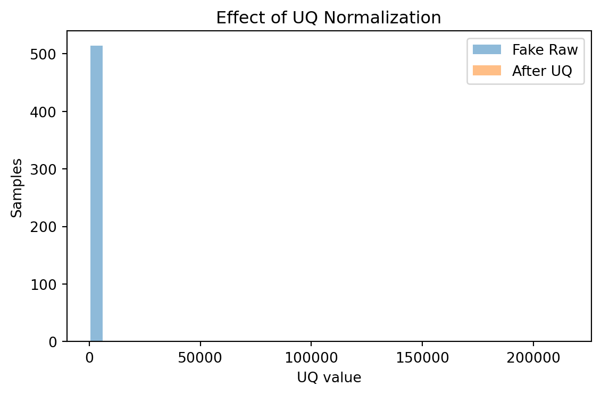

Genomics Data Mining
Before we begin
Statistics is the science and art of transforming data into actionable insight and sound judgement.
The data journey can be summarized as:
- Data
-
Raw facts, signals, or symbols, such as numbers or measurements which have little meaning in isolation.
Example: 98 - Information
-
Data that is processed, structured, and given context, making it meaningful.
Example: The patient’s weight is 98 kg - Knowledge
-
Information that is understood and applied through experience.
Example: The patient is overweight, requiring a higher dose of medication. - Wisdom
-
Utilizing knowledge and experience to make sound judgements, decisions, and future-oriented actions.
Example: Deciding to combine the medical treatment with a personalized lifestyle intervention plan, recognizing that treating the root cause of the weight is more effective for the patient’s long-term health than simply increasing their medication.
Expectations
Statistics
We expect a fundamental understanding of statistics including random distributions, sampling, linear regressions (simple and multivariate), bias, and variance.
Coding
We expect a basic understanding of programming (we use Python, but any programming language will do).
Only functions that are created within this project will have documentation, otherwise you are expected to be able to read and understand what they are doing through their own official documentation.
Biology
We are only looking at human biology, and expect you to know at least the following:
- Genome
- The complete set of DNA for a human
- Chromosome
- A packaged unit of DNA
- Humans have 46 chromosomes, which are made up of 23 pairs
- Each chromosome is one single (long) DNA molecule
- DNA
- The data (that stores biological information)
- Has two strands
- Made up of four chemicals A: Adenine C: Cytosine G: Guanine T: Thymine
- Located primarily in a cell’s nucleus
- Gene
- A specific section of DNA that contains instructions to make something
- RNA
- A temporary working copy a Gene
- Only has one strand
- Can leave the nucleus
- There are many types of RNA
- Protein
- Built from RNA instructions
- Perform most functions of the cell
- Cell
- The basic unit of life
- Different cells use different genes (in different quantities)
- All cells have the same DNA
- Tissue
- A group of similar cells working together
Focus
High-dimensional statistical inference is not a single analysis - it is a sequence of transformations, each introducing assumptions.
The conclusions are properties of the entire pipeline, not just the data.
When our data has a lot of dimensions, and the relationships between them is complex, are our conclusions true to the underlying structure or consequences of our pipeline/decisions?
Setup
Establishing a reproducible analysis environment.
Code
# Used if needed to debut environment issues
import sys, os, site
print("exe:", sys.executable)
from itables.options import maxBytes
print("ver:", sys.version)
print("prefix:", sys.prefix)
print("base_prefix:", sys.base_prefix)
print("cwd:", os.getcwd())
print("usersite:", site.getusersitepackages())
for k in ["PYTHONHOME", "PYTHONPATH", "CONDA_PREFIX", "VIRTUAL_ENV"]:
print(k, "=", os.environ.get(k))
import os, shutil, subprocess
from pathlib import Path
print("sys.executable:", sys.executable)
print("CONDA_PREFIX:", os.getenv("CONDA_PREFIX"))
print("CONDA_PREFIX_1:", os.getenv("CONDA_PREFIX_1"))
print("CONDA_EXE:", os.getenv("CONDA_EXE"))
print("which conda:", shutil.which("conda"))
# Try common locations
candidates = []
if os.getenv("CONDA_EXE"):
candidates.append(os.getenv("CONDA_EXE"))
if os.getenv("CONDA_PREFIX_1"):
candidates.append(str(Path(os.getenv("CONDA_PREFIX_1")) / "Scripts" / "conda.exe"))
if os.getenv("CONDA_ROOT"):
candidates.append(str(Path(os.getenv("CONDA_ROOT")) / "Scripts" / "conda.exe"))
print("\nCandidates:")
for c in candidates:
print(" ", c, "exists=", Path(c).exists())
# Try running conda directly if we found one
conda = next((c for c in candidates if Path(c).exists()), None) or shutil.which("conda")
print("\nResolved conda:", conda)
if conda:
p = subprocess.run([conda, "--version"], capture_output=True, text=True)
print("conda --version rc:", p.returncode)
print("stdout:", p.stdout.strip())
print("stderr:", p.stderr.strip())
else:
print("No conda found in this process.")Package Imports
Code
# --- Standard library ---
import importlib.metadata
import importlib
import json
import os
import platform
import random
import re
import shutil
import subprocess
import sys
import tarfile
from pathlib import Path
from urllib.parse import urlsplit
# --- Third-party ---
import itables
import numpy as np
import pandas as pd
import requests
import sklearn
import yaml
from IPython.display import Markdown, display
from ydata_profiling import ProfileReport
import matplotlib.pyplot as plt
# --- Currently Testing ---
import time
import cbioportal
from cbioportal.rest import ApiException
from pprint import pprint
# --- Local / project ---
import config
importlib.reload(config)Custom Objects
Code
from dataclasses import dataclass, field
from typing import Optional, List, Dict
@dataclass
class CancerStudy:
# Core identity
study_id: str
study_name: str
description: Optional[str]
# Cancer classification
cancer_type_id: Optional[str]
cancer_type_name: Optional[str]
# Clinical summary
sample_count: Optional[int] = None
patient_count: Optional[int] = None
# Data modalities present
data_types: List[str] = field(default_factory=list)
# Provenance
reference: Optional[str] = None
citation: Optional[str] = None
pmid: Optional[str] = None
# Internal / system metadata
source_url: Optional[str] = None
raw_meta: Dict[str, str] = field(default_factory=dict)Parameters
Note
Most parameters are defined in the config.py file, and will eventually be part of environment variables
Code
# Parameters
RANDOM_SEED = 3660Package Defaults / Options
Code
# ITables
# itables.init_notebook_mode()
itables.options.autoWidth = False
itables.options.style = "table-layout:auto;width:100%;margin:auto"
# Pandas
pd.set_option("display.max_rows", 30)
pd.set_option("display.max_columns", 50)
pd.set_option("display.width", 120)
pd.set_option("display.max_colwidth", 60)
# Randomness
os.environ["PYTHONHASHSEED"] = str(RANDOM_SEED)
random.seed(RANDOM_SEED)
np.random.seed(RANDOM_SEED)
# Note for later:
# - use random_state=RANDOM_SEED in sklearn models
# - TSNE(random_state=RANDOM_SEED)
# - train_test_split(..., random_state=RANDOM_SEED)
# Others
# ...Helper Functions
Code
def download_and_extract_studies(*study_ids: str) -> list[Path]:
return [_download_and_extract_study(study) for study in study_ids]
def _download_and_extract_study(study_id: str):
url = f"{config.DATAHUB_BASE}/{study_id}.tar.gz"
dataset_file = download_dataset(url)
dataset_path = extract_dataset(dataset_file)
return dataset_path
def download_dataset(url, /, *, folder: Path = config.DEFAULT_DATASET_DOWNLOAD_FOLDER, force: bool = False) -> Path:
folder.mkdir(parents=True, exist_ok=True)
filename = Path(urlsplit(url).path).name
target = folder / filename
if force or not target.exists():
response = requests.get(url, stream=True)
response.raise_for_status()
with target.open("wb") as f:
for chunk in response.iter_content(chunk_size=8192):
f.write(chunk)
return target
def extract_dataset(file: Path, /, *, folder: Path = config.DEFAULT_DATASET_EXTRACT_FOLDER, force: bool = False) -> Path:
base_name = file.name.removesuffix(".tar.gz")
extract_path = folder / base_name
folder.mkdir(parents=True, exist_ok=True)
if force or not extract_path.exists():
with tarfile.open(file, "r:gz") as tar:
tar.extractall(folder)
return extract_pathEnvironment
Checks
Code
# ---------- helpers ----------
def _run(cmd: list[str]) -> tuple[int, str, str]:
p = subprocess.run(cmd, capture_output=True, text=True)
return p.returncode, p.stdout, p.stderr
def _canonical(name: str) -> str:
return re.sub(r"[-_.]+", "-", name).lower().strip()
def read_environment_yml(path: str | Path = "environment.yml"):
"""
Parse environment.yml into:
- conda_chosen: conda deps declared in environment.yml (name -> version/constraint/None)
- pip_chosen: pip deps declared under `- pip:` in environment.yml (name -> version/constraint/None)
Notes:
- Handles conda pins like `name`, `name=ver`, `name=ver=build`
- Handles constraints like `python>=3.11`, `numpy<2`
- Normalizes accidental leading '=' in version strings (e.g., '=1.2.3')
"""
with open(path, "r", encoding="utf-8") as f:
data = yaml.safe_load(f) or {}
conda_chosen: dict[str, str | None] = {}
pip_chosen: dict[str, str | None] = {}
deps = data.get("dependencies", []) or []
for dep in deps:
if isinstance(dep, str):
s = dep.strip()
if not s:
continue
# constraint case: python>=3.11, numpy<2, etc.
m = re.match(r"^([A-Za-z0-9_.-]+)\s*([<>=!~].+)$", s)
if m:
conda_chosen[_canonical(m.group(1))] = m.group(2).strip()
continue
# conda pins can be: name, name=ver, name=ver=build
parts = s.split("=")
name = _canonical(parts[0])
ver = parts[1] if len(parts) >= 2 else None
if ver is not None:
ver = ver.strip()
if ver.startswith("=") and not ver.startswith("=="):
ver = ver.lstrip("=")
conda_chosen[name] = ver
elif isinstance(dep, dict) and "pip" in dep:
for p in dep.get("pip", []) or []:
ps = str(p).strip()
if not ps:
continue
if "==" in ps:
pkg, ver = ps.split("==", 1)
pip_chosen[_canonical(pkg)] = ver.strip()
else:
# store non-exact constraint as-is (>=, <=, ~=, etc.)
pkg = re.split(r"[<>=!~]", ps, maxsplit=1)[0].strip()
constraint = ps[len(pkg):].strip() or None
pip_chosen[_canonical(pkg)] = constraint
return data, conda_chosen, pip_chosen
def _conda_cmd() -> list[str] | None:
"""
Find conda.exe even when it's not on PATH (common for notebooks on Windows).
Priority:
1) CONDA_EXE env var (if set)
2) PATH lookup (shutil.which("conda"))
3) Derive from CONDA_PREFIX (Windows Anaconda layout):
CONDA_PREFIX = ...\\anaconda3\\envs\\<env>
conda.exe = ...\\anaconda3\\Scripts\\conda.exe
"""
# 1) explicit env var (often not set in notebooks)
conda_exe = os.getenv("CONDA_EXE")
if conda_exe and Path(conda_exe).exists():
return [conda_exe]
# 2) PATH lookup
which = shutil.which("conda")
if which:
return [which]
# 3) derive from CONDA_PREFIX on Windows
conda_prefix = os.getenv("CONDA_PREFIX")
if conda_prefix:
p = Path(conda_prefix)
# Typical: .../anaconda3/envs/<env> -> base is parent of "envs"
if p.parent.name.lower() == "envs":
base = p.parents[1]
else:
# Sometimes CONDA_PREFIX might be the base env itself
base = p
candidate = base / "Scripts" / "conda.exe"
if candidate.exists():
return [str(candidate)]
return None
def conda_available() -> bool:
cmd = _conda_cmd()
if not cmd:
return False
try:
subprocess.run(cmd + ["--version"], capture_output=True, text=True, check=True)
return True
except Exception:
return False
def get_conda_installed_versions_strict() -> dict[str, str]:
cmd = _conda_cmd()
if not cmd:
raise FileNotFoundError("Could not find conda executable...")
prefix = os.getenv("CONDA_PREFIX")
if not prefix:
raise RuntimeError("CONDA_PREFIX is not set; cannot target env.")
proc = subprocess.run(
cmd + ["list", "--json", "--prefix", prefix],
capture_output=True,
text=True,
)
if proc.returncode != 0:
raise RuntimeError(f"conda list failed:\nSTDOUT:\n{proc.stdout}\nSTDERR:\n{proc.stderr}")
items = json.loads(proc.stdout)
out = {}
for it in items:
name = (it.get("name") or "").strip().lower()
ver = (it.get("version") or "").strip()
if name and ver:
out[name] = ver
out["python"] = sys.version.split()[0]
return out
def get_conda_chosen_from_history() -> dict[str, str | None]:
"""
Packages explicitly requested in this env (best proxy):
`conda env export --from-history [--prefix ...]`
Returns: canonical_name -> constraint/pin/None
- Handles pins: name, name=1.2.3, name=1.2.3=build
- Handles constraints: name<2, name>=3.11, name ~=1.4, etc.
"""
cmd = _conda_cmd()
if not cmd:
return {}
# Prefer CONDA_PREFIX if available; otherwise fall back to interpreter prefix
prefix = os.getenv("CONDA_PREFIX") or str(Path(sys.executable).resolve().parent.parent)
proc = subprocess.run(
cmd + ["env", "export", "--from-history", "--prefix", prefix],
capture_output=True,
text=True,
)
if proc.returncode != 0:
# If conda isn't available in this context, just return empty (don't blow up rendering)
return {}
data = yaml.safe_load(proc.stdout) or {}
deps = data.get("dependencies", []) or []
chosen: dict[str, str | None] = {}
for dep in deps:
if not isinstance(dep, str):
continue
s = dep.strip()
if not s:
continue
# constraint case: python>=3.11, setuptools<80, numpy!=2.0, etc.
m = re.match(r"^([A-Za-z0-9_.-]+)\s*([<>=!~].+)$", s)
if m:
chosen[_canonical(m.group(1))] = m.group(2).strip()
continue
# pin case: name, name=ver, name=ver=build
parts = s.split("=")
name = _canonical(parts[0])
ver = parts[1].strip().lstrip("=") if len(parts) >= 2 else None
chosen[name] = ver
return chosen
def get_pip_installed_all() -> dict[str, str]:
"""
pip list as json; best effort even inside conda env.
"""
rc, out, err = _run([sys.executable, "-m", "pip", "list", "--format=json"])
if rc != 0:
return {}
items = json.loads(out)
return {_canonical(it["name"]): it["version"] for it in items}
def version_status(expected: str | None, installed: str | None) -> str:
if installed is None:
return "MISSING"
if expected is None:
return "OK (un-pinned)"
expected = expected.strip()
# Treat "=1.2.3" as an exact pin (common accidental format)
if expected.startswith("=") and not expected.startswith("=="):
expected = expected.lstrip("=")
# True constraints (>=, <=, ==, ~=, etc.)
if expected and expected[0] in "<>!~" or expected.startswith("=="):
return "CHECK (constraint)"
if expected.endswith(".*"):
return "OK" if installed.startswith(expected[:-1]) else "MISMATCH"
return "OK" if installed == expected else "MISMATCH"
# ---------- run ----------
env_data, yml_conda_chosen, yml_pip_chosen = read_environment_yml("environment.yml")
# Capture interpreter details (your "custom interpreter" concern)
interpreter_rows = [
{"Key": "sys.executable", "Value": sys.executable},
{"Key": "sys.version", "Value": sys.version},
]
if os.getenv("CONDA_PREFIX"):
interpreter_rows.append({"Key": "CONDA_PREFIX", "Value": os.getenv("CONDA_PREFIX")})
df_interpreter = pd.DataFrame(interpreter_rows)
display(df_interpreter)
# Get actuals
try:
conda_installed = get_conda_installed_versions_strict() if conda_available() else {}
except Exception as e:
print("⚠️ Could not read conda installed packages:", e)
conda_installed = {}
conda_history_chosen = get_conda_chosen_from_history() if conda_available() else {}
pip_installed = get_pip_installed_all()
rows: list[dict] = []
def add_manager_rows(
manager: str,
chosen_map: dict[str, str | None],
installed_versions: dict[str, str],
):
chosen_set = set(chosen_map.keys())
# chosen packages (source of truth = environment.yml)
for pkg in sorted(chosen_map.keys()):
exp = chosen_map[pkg]
got = installed_versions.get(pkg)
status = version_status(exp, got)
rows.append({
"Manager": manager,
"Package": pkg,
"Chosen?": True,
"Expected (environment.yml)": exp if exp is not None else "(un-pinned)",
"Installed": got if got is not None else "(not installed)",
"Status": status,
})
# dependencies (installed but not chosen)
for pkg in sorted(set(installed_versions.keys()) - chosen_set):
got = installed_versions.get(pkg)
rows.append({
"Manager": manager,
"Package": pkg,
"Chosen?": False,
"Expected (environment.yml)": "(dependency)",
"Installed": got,
"Status": "INFO (dependency)",
})
# Conda & Pip rows
add_manager_rows("conda", yml_conda_chosen, conda_installed)
add_manager_rows("pip", yml_pip_chosen, pip_installed)
df = pd.DataFrame(rows)
# Helpful sorting: chosen first, then manager, then package
df = df.sort_values(by=["Chosen?", "Manager", "Package"], ascending=[False, True, True]).reset_index(drop=True)
display(df)
# Summary counts for quick signal
summary = df.groupby(["Manager", "Status"]).size().reset_index(name="Count")
display(summary)
# Extra: show "explicit conda-history packages missing from environment.yml"
extra_explicit = []
if conda_history_chosen:
for pkg in sorted(set(conda_history_chosen.keys()) - set(yml_conda_chosen.keys())):
extra_explicit.append({
"Package": pkg,
"From conda history": conda_history_chosen[pkg],
"In environment.yml?": "NO",
})
df_extra_explicit = pd.DataFrame(extra_explicit)
if not df_extra_explicit.empty:
print("⚠️ Packages explicitly requested in this conda env (history) but missing from environment.yml:")
display(df_extra_explicit)
else:
print("✅ No extra explicit conda-history packages missing from environment.yml (or conda history unavailable).")| Key | Value | |
|---|---|---|
| 0 | sys.executable | C:\dev\bijan-projects\genomics-data-mining\env\python.exe |
| 1 | sys.version | 3.11.14 | packaged by conda-forge | (main, Jan 26 2026, ... |
| 2 | CONDA_PREFIX | C:\dev\bijan-projects\genomics-data-mining\env |
| Manager | Package | Chosen? | Expected (environment.yml) | Installed | Status | |
|---|---|---|---|---|---|---|
| 0 | conda | cbioportal | True | (un-pinned) | 1.0.0 | OK (un-pinned) |
| 1 | conda | ipykernel | True | (un-pinned) | 7.2.0 | OK (un-pinned) |
| 2 | conda | ipywidgets | True | (un-pinned) | 8.1.8 | OK (un-pinned) |
| 3 | conda | itables | True | (un-pinned) | 2.7.0 | OK (un-pinned) |
| 4 | conda | jupyter-cache | True | (un-pinned) | 1.0.1 | OK (un-pinned) |
| ... | ... | ... | ... | ... | ... | ... |
| 412 | pip | widgetsnbextension | False | (dependency) | 4.0.15 | INFO (dependency) |
| 413 | pip | win-inet-pton | False | (dependency) | 1.1.0 | INFO (dependency) |
| 414 | pip | wordcloud | False | (dependency) | 1.9.6 | INFO (dependency) |
| 415 | pip | ydata-profiling | False | (dependency) | 0.0.dev0 | INFO (dependency) |
| 416 | pip | zipp | False | (dependency) | 3.23.0 | INFO (dependency) |
417 rows × 6 columns
| Manager | Status | Count | |
|---|---|---|---|
| 0 | conda | CHECK (constraint) | 1 |
| 1 | conda | INFO (dependency) | 232 |
| 2 | conda | OK (un-pinned) | 17 |
| 3 | pip | INFO (dependency) | 167 |
⚠️ Packages explicitly requested in this conda env (history) but missing from environment.yml:| Package | From conda history | In environment.yml? | |
|---|---|---|---|
| 0 | dash-ag-grid | None | NO |
| 1 | setuptools[version | '< | NO |
Data Acquisition
We use the cBioPortal to gather data about what is available.
cBioPortal
Cancer Types
Code
# Cancer Types API
cancer_types_api_config = cbioportal.Configuration()
cancer_types_api_instance = cbioportal.CancerTypesApi(cbioportal.ApiClient(cancer_types_api_config))
cbioportal_cancer_types = cancer_types_api_instance.get_all_cancer_types_using_get()
cbioportal_cancer_types = pd.DataFrame([item.to_dict() for item in cbioportal_cancer_types])
itables.show(
cbioportal_cancer_types
)| Loading ITables v2.7.0 from the internet... (need help?) |
Studies
Code
# Studies API
studies_api_instance = cbioportal.StudiesApi()
cbioportal_studies = studies_api_instance.get_all_studies_using_get()
cbioportal_studies = pd.DataFrame([item.to_dict() for item in cbioportal_studies])
itables.show(
cbioportal_studies,
maxBytes=0
)| Loading ITables v2.7.0 from the internet... (need help?) |
Clinical Attributes
Code
# Clinical Attributes API
lgg_clinical_attributes = cbioportal.ClinicalAttributesApi().get_all_clinical_attributes_in_study_using_get('lgg_tcga_pan_can_atlas_2018')
lgg_clinical_attributes = pd.DataFrame([item.to_dict() for item in lgg_clinical_attributes])
itables.show(
lgg_clinical_attributes
)| Loading ITables v2.7.0 from the internet... (need help?) |
Download and Extract
The Brain Lower Grade Glioma (TCGA, PanCancer Atlas) dataset was obtained from the cBioPortal for Cancer Genomics. The dataset was downloaded as a compressed tarball containing clinical, molecular, and metadata files.
Dataset: Brain Lower Grade Glioma (TCGA, PanCancer Atlas)
Source: https://www.cbioportal.org/
File: lgg_tcga_pan_can_atlas_2018.tar.gz
Code
study_paths = download_and_extract_studies(
"lgg_tcga_pan_can_atlas_2018",
"lgg_ucsf_2014"
)
study_paths[WindowsPath('C:/dev/bijan-projects/genomics-data-mining/data/external/extracted/lgg_tcga_pan_can_atlas_2018'),
WindowsPath('C:/dev/bijan-projects/genomics-data-mining/data/external/extracted/lgg_ucsf_2014')]
NotecBioPortal Downloading
There is extensive documentation for how to download from cBioPortal. This includes manually through the browser, or with an API. https://docs.cbioportal.org/downloads/
Data Loading
Using information from the cBioPortal Summary tab and the downloaded data files, the following provides a high-level overview of the dataset, including patient counts, molecular data availability, mutation frequencies, and survival information.
Code
def describe_dataframe_table(df: pd.DataFrame) -> pd.DataFrame:
rows = []
for col in df.columns:
s = df[col]
row = {
"Column Name": col,
"Column Type": str(s.dtype),
"Non-Null Count": s.notna().sum(),
"Missing Count": s.isna().sum(),
}
if pd.api.types.is_numeric_dtype(s):
row.update({
"Data Kind": "Numeric",
"Min": s.min(),
"Max": s.max(),
"Categories": None,
})
else:
row.update({
"Data Kind": "Categorical",
"Min": None,
"Max": None,
"Categories": ", ".join(map(str, s.dropna().unique()[:10])),
})
rows.append(row)
return pd.DataFrame(rows)Code
clinical_patient_file = Path("data/external/extracted/lgg_tcga_pan_can_atlas_2018/data_clinical_patient.txt")
df_clinical_patients = pd.read_csv(clinical_patient_file, sep="\t", comment="#")
itables.show(
df_clinical_patients,
maxBytes=0
)
described_df_clinical_patients = describe_dataframe_table(df_clinical_patients)
itables.show(
described_df_clinical_patients,
paging=False,
text_in_header_can_be_selected=False,
columnControl=["order", "colVisDropdown", "searchDropdown"],
ordering={"indicators": False, "handler": False}
)| Loading ITables v2.7.0 from the internet... (need help?) |
| Loading ITables v2.7.0 from the internet... (need help?) |
Code
clinical_sample_file = Path("data/external/extracted/lgg_tcga_pan_can_atlas_2018/data_clinical_sample.txt")
df_clinical_samples = pd.read_csv(clinical_sample_file, sep="\t", comment="#")
itables.show(
df_clinical_samples,
maxBytes=0
)
described_df_clinical_samples = describe_dataframe_table(df_clinical_samples)
itables.show(described_df_clinical_samples)| Loading ITables v2.7.0 from the internet... (need help?) |
| Loading ITables v2.7.0 from the internet... (need help?) |
Code
mrna_seq_file = Path("data/external/extracted/lgg_tcga_pan_can_atlas_2018/data_mrna_seq_v2_rsem.txt")
df_mrna_seq = pd.read_csv(mrna_seq_file, sep="\t", comment="#")
itables.show(
df_mrna_seq,
)
described_df_mrna_seq = describe_dataframe_table(df_mrna_seq)
itables.show(described_df_mrna_seq)
# expr = df.iloc[:, 2:]
# gene_summary = pd.DataFrame({
# "mean": expr.mean(axis=1),
# "median": expr.median(axis=1),
# "std": expr.std(axis=1),
# "variance": expr.var(axis=1),
# "nonzero_fraction": (expr > 0).mean(axis=1)
# })
# gene_summary.head()| Loading ITables v2.7.0 from the internet... (need help?) |
| Loading ITables v2.7.0 from the internet... (need help?) |
Data Understanding
Review
- Cancer is a disease of altered cellular behaviour
- Cellular behaviour is driven by proteins
- Proteins are made from mRNA
- mRNA reflects gene activity and strength
Therefore, measuring mRNA gives us a quantitative snapshot of cellular behaviour.
RNA Sequencing
Goal: From a tissue sample of a tumor, find out which genes are being expressed and how much
- Prepare a sequence library
- Sequence
- Prepare data
Part 1: Prepare a sequence library
Input: Tissue Sample
Output: cDNA Fragments
Part 2: Sequence
Input: cDNA Fragments
- Put fragment on Flow cell
- Probe each nucleotide
- Repeated until the entire fragment is probed
Output: FAST file, which has the sequence of bases for each fragment and a quality score per base
Part 3: Prepare Data
Input: FAST file
- Align the high quality reads to a transcript / gene (probabilistic)
Output: Counts of fragments to transcripts
WHAT DOES THIS NUMBER TELL US?
Each number represents a gene’s relative expression level. We can compare both across the samples, and across genes.
Upper Quartile (UQ) Normalization — Inspection
Upper Quartile normalization rescales each sample so that the 75th percentile of expression values is aligned across samples.
If the data are already UQ-normalized, we expect:
- The 75th percentile values to be very similar across samples.
- Expression distributions to be roughly aligned (on a log scale).
- Low variability in the per-sample UQ values.
Compute the Upper Quartile per Sample
Code
# --- Build a numeric matrix X with samples in columns ---
df = df_mrna_seq.copy()
# Use Hugo_Symbol as index if present; otherwise keep default index.
if "Hugo_Symbol" in df.columns:
df = df.set_index("Hugo_Symbol")
if "Entrez_Gene_Id" in df.columns:
df = df.drop(columns=["Entrez_Gene_Id"])
# If you have other non-sample identifier columns, drop them here as needed.
# Example:
# for col in ["Entrez_Gene_Id", "Entrez_Gene_ID", "Entrez_Gene_id", "Entrez_GeneID"]:
# if col in df.columns:
# df = df.drop(columns=[col])
# Coerce to numeric; non-numeric entries become NaN
X = df.apply(pd.to_numeric, errors="coerce")
def uq_nonzero(col: pd.Series) -> float:
"""75th percentile excluding zeros and NaNs. Returns NaN if empty."""
v = col.dropna()
v = v[v > 0]
if len(v) == 0:
return np.nan
return float(np.quantile(v, 0.75))
uq = X.apply(uq_nonzero, axis=0)
uqTCGA-CS-4938-01 999.37100
TCGA-CS-4941-01 1000.00000
TCGA-CS-4942-01 1000.00000
TCGA-CS-4943-01 999.86000
TCGA-CS-4944-01 999.74900
...
TCGA-WY-A85A-01 999.20800
TCGA-WY-A85B-01 1000.00000
TCGA-WY-A85C-01 999.93250
TCGA-WY-A85D-01 999.38375
TCGA-WY-A85E-01 999.94700
Length: 514, dtype: float64Distribution of UQ Across Samples
Code
plt.figure(figsize=(6,4))
plt.hist(uq.dropna().values, bins=40)
plt.title("Per-sample Upper Quartile (75th percentile)")
plt.xlabel("UQ value")
plt.ylabel("Number of samples")
plt.tight_layout()
plt.show()
Interpretation
If the data are properly UQ-normalized: - The histogram should be tightly concentrated - Large spread would indicate remaining library-size differences
Sorted UQ Values
Code
uq_sorted = np.sort(uq.dropna().values)
plt.figure(figsize=(6,4))
plt.plot(uq_sorted)
plt.title("Sorted Per-sample UQ Values")
plt.xlabel("Samples (sorted)")
plt.ylabel("UQ value")
plt.tight_layout()
plt.show()
Interpretation
- A nearly flat line indicated consistent normalization
- A steep slope suggests uneven scaling across samples
Expression Distribution Comparison (log scale)
We compare a subset of samples to inspect distribution alignment
Code
sample_cols = list(X.columns[:8]) # change 8 to any small number you want
plt.figure(figsize=(8,5))
for col in sample_cols:
v = X[col].dropna()
v = v[v > 0]
if len(v) == 0:
continue
plt.hist(np.log10(v), bins=60, alpha=0.3)
plt.title("Log10(Expression) Distributions (Selected Samples)")
plt.xlabel("log10(expression)")
plt.ylabel("Frequency")
plt.tight_layout()
plt.show()
Interpretation
After UQ normalization - Distributions should overlap substantially - Major horizontal shifts would suggest remaining depth differences - Perfect overlap is not expected (i.e., biological variation remains)
Coefficient of Variation of UQ
Code
uq_clean = uq.dropna()
cv = uq_clean.std() / uq_clean.mean()
cv0.0002524145661104937The coefficient of variation summarized how tightly aligned the UQ values are - Small: strong normalization consistency - Large: residual scaling differences
Demonstrating what UQ normalization fixes
Since we don’t have raw counts, we simulate uneven sequencing depth by artificially scaling samples.
Create Artificial Library Size Differences
Code
rng = np.random.default_rng(42)
fake_scale = pd.Series(
rng.uniform(0.5, 2.0, size=X.shape[1]),
index=X.columns,
name="fake_scale"
)
X_fake_raw = X.mul(fake_scale, axis=1)
uq_fake = X_fake_raw.apply(uq_nonzero, axis=0)
uq_fakeTCGA-CS-4938-01 1659.889345
TCGA-CS-4941-01 1158.317660
TCGA-CS-4942-01 1787.896880
TCGA-CS-4943-01 1545.835596
TCGA-CS-4944-01 641.105064
...
TCGA-WY-A85A-01 673.251449
TCGA-WY-A85B-01 608.088721
TCGA-WY-A85C-01 1762.870815
TCGA-WY-A85D-01 582.992385
TCGA-WY-A85E-01 920.868346
Length: 514, dtype: float64Distortion
Code
plt.figure(figsize=(6,4))
plt.hist(uq_fake.dropna().values, bins=40)
plt.title("Artificially Distorted Data (UQ Spread Out)")
plt.xlabel("UQ value")
plt.ylabel("Number of samples")
plt.tight_layout()
plt.show()
Multiplicative scaling causes the 75th percentile values to diverge.
Reapply UQ Normalization
Code
target = np.nanmedian(uq_fake.values)
X_fake_uq = X_fake_raw.div(uq_fake, axis=1) * target
uq_after = X_fake_uq.apply(uq_nonzero, axis=0)
uq_afterTCGA-CS-4938-01 1252.673141
TCGA-CS-4941-01 1252.673141
TCGA-CS-4942-01 1252.673141
TCGA-CS-4943-01 1252.673141
TCGA-CS-4944-01 1252.673141
...
TCGA-WY-A85A-01 1252.673141
TCGA-WY-A85B-01 1252.673141
TCGA-WY-A85C-01 1252.673141
TCGA-WY-A85D-01 1252.673141
TCGA-WY-A85E-01 1252.673141
Length: 514, dtype: float64Correction
Code
plt.figure(figsize=(6,4))
plt.hist(uq_after.dropna().values, bins=40)
plt.title("After UQ Normalization (UQ Realigned)")
plt.xlabel("UQ value")
plt.ylabel("Number of samples")
plt.tight_layout()
plt.show()
Compare Before vs After
Code
plt.figure(figsize=(6,4))
plt.hist(uq_fake.dropna().values, bins=40, alpha=0.5, label="Distorted")
plt.hist(uq_after.dropna().values, bins=40, alpha=0.5, label="After UQ")
plt.legend()
plt.title("Effect of UQ Normalization")
plt.xlabel("UQ value")
plt.ylabel("Number of samples")
plt.tight_layout()
plt.show()
Overall UQ normalization: - Corrects multiplicative library-size effects - Anchors the 75th percentile expression level - Assumes most genes are not dramatically differntially expressed - Does not remove biological variation
Data Cleaning
Dimension Reduction
Statistical Modelling
Conclusions
Other stuff
Code
%matplotlib inline
def upper_quartile_nonzero(x: pd.Series, q: float = 0.75) -> float:
"""Upper quartile excluding zeros/NaNs. Returns NaN if too few nonzero values."""
v = x.to_numpy(dtype=float)
v = v[np.isfinite(v)]
v = v[v > 0]
if v.size < 10:
return np.nan
return float(np.quantile(v, q))
df = df_mrna_seq.copy()
# 1) Put gene identifiers in the index (optional but nice)
df = df.set_index(["Hugo_Symbol", "Entrez_Gene_Id"])
# 2) Sample columns are now all remaining columns
sample_cols = df.columns
# 3) Coerce sample data to numeric (handles strings/object dtype safely)
X = df.apply(pd.to_numeric, errors="coerce") # same shape as df, but numeric/NaN
# Helper: get nonzero values from one sample column
def nonzero_vals(col: pd.Series):
v = col.dropna()
v = v[v > 0]
return v.values
uq = X.apply(lambda s: np.quantile(nonzero_vals(s), 0.75) if nonzero_vals(s).size else np.nan, axis=0)Looking at some data
Upper quartile per sample
Code
plt.figure(figsize=(6,4))
plt.hist(uq.dropna().values, bins=40)
plt.title("Per-sample Upper Quartile (75th percentile, nonzero)")
plt.xlabel("UQ value")
plt.ylabel("Number of samples")
plt.tight_layout()
plt.show()
Sorted UQ line plot
Code
uq_sorted = np.sort(uq.dropna().values)
plt.figure(figsize=(6,4))
plt.plot(uq_sorted)
plt.title("Sorted per-sample UQ values")
plt.xlabel("Samples (sorted)")
plt.ylabel("UQ value")
plt.tight_layout()
plt.show()
Compare distributions across some samples (log10)
Code
chosen = list(sample_cols[:8]) # pick any 8 you want
plt.figure(figsize=(8,5))
for col in chosen:
v = nonzero_vals(X[col])
if v.size == 0:
continue
plt.hist(np.log10(v), bins=60, alpha=0.3)
plt.title("log10(Expression) distributions (selected samples)")
plt.xlabel("log10(expression)")
plt.ylabel("Frequency")
plt.tight_layout()
plt.show()
Coefficient of variation
Code
uq_clean = uq.dropna()
cv = uq_clean.std() / uq_clean.mean()
cv0.0002524145661104937Exploration
Code
df = df_mrna_seq.copy()
df = df.set_index("Hugo_Symbol")
X = df.apply(pd.to_numeric, errors="coerce")
def uq_nonzero(col):
v = col.dropna()
v = v[v > 0]
if len(v) == 0:
return np.nan
return np.quantile(v, 0.75)
uq_original = X.apply(uq_nonzero, axis=0)
# Artificially create fake raw counts
rng = np.random.default_rng(42)
fake_scale = pd.Series(
rng.uniform(0.5, 2.0, size=X.shape[1]),
index=X.columns
)
X_fake_raw = X.mul(fake_scale, axis=1)
uq_fake = X_fake_raw.apply(uq_nonzero, axis=0)
plt.figure(figsize=(6,4))
plt.hist(uq_fake.dropna().values, bins=40)
plt.title("Fake Raw Data: UQ Spread Out")
plt.xlabel("UQ value")
plt.ylabel("Samples")
plt.tight_layout()
plt.show()
target = np.nanmedian(uq_fake.values)
X_fake_uq = X_fake_raw.div(uq_fake, axis=1) * target
uq_after = X_fake_uq.apply(uq_nonzero, axis=0)
plt.figure(figsize=(6,4))
plt.hist(uq_after.dropna().values, bins=40)
plt.title("After UQ Normalization: UQ Tight Again")
plt.xlabel("UQ value")
plt.ylabel("Samples")
plt.tight_layout()
plt.show()
plt.figure(figsize=(6,4))
plt.hist(uq_fake.dropna().values, bins=40, alpha=0.5, label="Fake Raw")
plt.hist(uq_after.dropna().values, bins=40, alpha=0.5, label="After UQ")
plt.legend()
plt.title("Effect of UQ Normalization")
plt.xlabel("UQ value")
plt.ylabel("Samples")
plt.tight_layout()
plt.show()


- Isolate
- Tumor Sample –> RNA
- We isolate all the RNA
- Fragment
- Isolated RNA –>
We take our tumor sample and isolate all of the RNA (or poly-A selected mRNA) turn Mature mRNA into RNA fragments, in a process called fragmentation. Then, with turn those RNA fragments into cDNA fragments, in a process called reverse transcription. This all goes into a High-throughput sequencing machine to give us sequences/reads of every fragment. This will be an ordered list of the chemicals (A C G T) ?? Do we read the RNA or the c-DNA strand
Major Data Point 1: We now have a count of all the fragments (and what they are)
All of these reads need to get aligned back to the original gene.
Problems
- Different versions of Mature mRNA (which are referred to as an “isoform”) can happen because of an issue during the processing from Pre-mRNA to Mature mRNA including:
- Alternative transcript initiation
- Alternative 5’ splice site
- Altertiave 3’ splice site
- Skipped exon
- Alternative polyadenylation
- … others
- It is expensive and takes a long time to do really long reads (e.g., the whole gene), which is why we need to fragment the mRNA into smaller pieces.
- This means that we might not always capture all the different isoforms.
- Fragments might align to more than one isoform, or to a different gene.
Goal
Expression Analysis, estimate a transcriptome, the set of all expressed transcripts and their frequencies in a cell at a given time.
- We can measure/calculate the relative expression (i.e., frequency) of two things in our sample:
- Transcripts (i.e., What proportion of the sample was expressed by a specific isoform, by transcripts?)
- e.g., There are a total of 100 transcripts in the whole sample. Isoform AAA1 was expressed by 88 of them.
- Nucleotides (i.e., What proportion of the sample was expressed by a specific isoform, by nucleotides?)
- e.g., There are a total of 1,000,000 nucleotides in the whole sample. Isoform BBB2 was expressed by 500,000 of them.
- Transcripts (i.e., What proportion of the sample was expressed by a specific isoform, by transcripts?)
Somethingsomething
Definitions All definitions are framed for cBioPortal, the software system (which includes a website, and database) for interactive exploration of multidimensional cancer genomics data sets.
- TCGA
- The Cancer Genome Atlas, a project that profiles specific cancer types to understand their individual molecular landscape.
- PanCanAtlas
- a Pan-Cancer Initiative that took all 33 TCGA cancer types and analyzed them together to compare molecular similarities and differences.
- Study
- Often identified by its acronym (e.g., TCGA-LGG) represents the specific tumour cohort that was analyzed.
- Ontology
- a set of concepts and categories in a subject area or domain that shows their properties and the relations between them
- OncoTree
- the cancer type ontology used by cBioPortal, which has has a root node of Tissue, so Level 1 would be all the Tissue Sites, then they are categorized by cancer types.
cBioPortal Data Model
Database Studies Clinical Data Samples Sample Lists Patients Namespace Attributes Mutations Molecular Data Gene Panel Data Discrete Copy Number Alterations Molecular Profiles Genes Generic Assays Generic Assay Data Gene Panels Copy Number Segments Clinical Attributes Cancer Types
Database, the Dataset, the set of files for a particular study Data Type: Clinical Data Type: Molecular Sequencing RNA Sequencing RSEM
RSEM defines the following;
For isoform \(i\), \(\nu_i\), the fraction of nucleotides made up by a given gene or isoform \[ \nu_i = \frac{\tau_i\ell_i}{\sum_j\tau_j\ell_j} \]
\(\tau_i\), the fraction of transcripts made up by a given gene or isoform \[ \tau_i = \frac{\nu_i}{\ell_i}\left(\sum_j\frac{\nu_j}{\ell_j}\right)^{-1} \]
where \(\ell_i\) is the length, in nucleotides, of isoform \(i\).
The probability that the read sequence \[ P(r|\theta) = \prod_{n=1}^N\sum_{i=0}^M\theta_i P(r_n|G_n=i) \]
EM Algorithm - An iterative method to find (local) maximum likelihood estimates of parameters in statistical models, where the model depends on unobserved latent variables.
RSEM Model - Generates reads from a combination of isoform, start position, and orientation - \(N\) the number of reads generated (independent and identically distributed) - i.i.d is an assumption that is supported by uniform sampling, massive parallelization and high depth, random fragmentation, poisson/negative binomial approximation accounting for dispersion - i.i.d. for rna-seq is rarely perfect, but is helpful for when we do differential expression analysis - \(L\) the length of reads - Random Variables - \(R_n\), read sequences (i.e., observed data) - Latent Random Variables - \(G_n\), isoform (from which the read came from) - \(S_n\), start position (from which the read came from) - \(O_n\), orientation (from which the read came from) - Parameters - \(\theta = [\theta_0, ... , \theta_M]\), the expression levels - We assume \(M\), all possible isoforms in a transcriptome, is given
More Details - \(G_n \in \{0, ..., M\}\), where \(0\) represents a ‘noise’ isoform, which generates reads that do not map to known isoforms. - The probability of any given isoform is determined when the expression levels for that isoform equals 1. - \(P(G_n=i | \theta) = \theta_i \text{ where } \sum_i\theta_i = 1\) - \(S_n \in \{1, ..., \text{max}_i\ell_i}\), where \(\ell_i\) is the length of isoform \(i\) - \(P(S_{n=j} | G_{n=i})\) is called the read start position distribution (RPSD) - \(P(S_{n=j} | G_{n=i}) = \ell^{-1}_i\), for reads generated uniformly across transcripts and mRNA with poly(A) tails - The other models are not shown, because the important part is the relationship with length - \(O_n \in \{0, 1\}\) - 0 indicating that the sequence of read n is in the same orientation as that of its parent isoform - 1 indicating thet the sequence of read n is the reverse complement of its parent isoform - \(R_n\) summarizes the hidden random variables for the \(n\)-th read with a set of indicator random variables - \(Z_{nijk} \text{ where } Z_{njk} = 1 \text{ if } (G_n, S_n, O_n) = (i, j, k)\) - Therefore, the conditional probability of a read sequence derived from an isoform (other than the noise isoform) is given by
\[ P(R_n = \rho | Z_{njk} = 1) = \begin{cases} \prod_{t=1}^L w_t(\rho_t , \gamma_{j+t-1}^i) \qquad k=0 \\ \prod_{t=1}^L w_t(\rho_t , \bar{\gamma}_{j+t-1}^i) \qquad k=1 \end{cases} \]
- \(\gamma^i\) is the sequence of the isoform \(i\) and \(\bar{\gamma}^i\) is its reverse complement
- \(w_t(a,b)\) is a position-specific substitution matrix, where the value is the probability that we observe character \(a\) as position \(t\) of the read given that the corresponding character in the reference isoform sequence is \(b\)
Expresseions at the gene level is simply the sum of the expression of possible isoforms.
NOTE: There is some really interesting Maths regarding the RSEM algorithm alternating between the E-step and the M-step that results in the concavity of the log likelihood function (i.e., guaranteed to reach a global maximum).
What the bloody hell does this even mean?
We’re looking at “genes.normalized_results” so it’s going to be the sum of isoforms
- RNASeqV2 = Processed using RSEM (RNA-Seq by Expectation-Maximization)
- Specifically data_mrna_seq_v2_rsem.txt = to the rsem.genes.normalized_results file from TCGA
- RSEM calculates the estimated number of reads that aligned to a transcript (i.e., relative expression)
- fraction of transcripts
- fraction of nucleotides
What do the numbers in data_mrna_seq_v2_rsem.txt mean?
Code
11🧬 From Shredded Spells to Gene Expression
What We Actually Measured
🔍 The Crime Scene (Biological Reality)
Tumor tissue contains RNA.
RNA represents which genes are actively being used.
We sequence millions of short fragments (reads).
Each read is a tiny piece of a transcript.
📖 The Reconstruction
We assume all fragments came from a known reference “book” (the human transcriptome).
Using RSEM (RNA-Seq by Expectation Maximization):
Reads are probabilistically assigned to transcript isoforms.
Isoform estimates are aggregated to gene-level estimates.
Values are corrected for:
Gene length
Sequencing depth
Multi-mapping reads
The result:
A gene-by-sample matrix of estimated transcript abundance.
📊 What Each Row Represents
Hugo_Symbol
The official gene name (e.g., TP53, IDH1).
Entrez_Gene_Id
Stable numeric gene identifier (database key).
Each row = one gene.
Each column = one tumor sample.
Each value = estimated mRNA abundance for that gene in that tumor.
📈 What the Numbers Mean
Continuous
Non-negative
Linear RSEM abundance estimates
Proportional to transcript abundance
Not raw molecule counts
Not mutation data
Not protein levels
If Gene A = 200 and Gene B = 100 (within a sample):
→ Gene A has approximately twice the estimated transcript abundance of Gene B.
But:
Magnitude ≠ importance.
🧠 What Matters Most
1️⃣ Same Gene Across Samples
Biologically meaningful comparison.
2️⃣ Variability Across Tumors
High variance genes → informative
Low variance genes → housekeeping / background
3️⃣ Expression ≠ Genome
We measured gene expression, not gene presence or mutation.
🧬 Key Vocabulary
Gene – DNA locus that produces RNA.
Isoform – Alternative transcript version of a gene.
Transcriptome – Total RNA expression profile of a sample.
RSEM – Probabilistic transcript quantification method.
Expected Counts – Model-based abundance estimates.
Normalization – Adjusting for technical bias (not biological baseline).
Variance – Spread across samples; often more informative than raw magnitude.
🎭 The Big Insight
Each tumor is not just a disease.
It is:
A 20,531-dimensional expression profile
describing which biological programs are active.
We reconstructed the “spellbook.”
But the real story lives in:
Which chapters change.
Which remain constant.
And how patterns emerge across tumors.
⚠️ The Important Limitation
Expression data tells us:
- What instructions are active.
It does NOT tell us:
Why they’re active.
Whether they’re mutated.
Whether protein levels match.
Whether the change is causal.
This is one layer of biology.
🔥 Final Line for Class
“We didn’t count genes.
We counted how loudly each gene was being read.
And in that noise… the pattern begins to whisper.”
I’m trying to focus on simplifying and understanding sequencing for the cancer data project.
In the readme for one of the TCGA Pancan datasets, is something saying Tumor Break Load: - TBL scores based on Lakbir et al., 2024 (Manuscript in progress) - Overview of TBL calculation for TCGA, from Lakbir et al., Eur J Cancer 2024 - Data is provided as a sample-level clinical attribute labeled Tumor Break Load
… Is this relevant to what I want to know … which is …. First, what I think I understand:
We have a study (e.g. TCGA-LGG) that focuses on the particular cancer (CNV/Brain: LGG), which has some patients, who had a sample of the cancer taken. That sample then went through a process which ended up in some data.
The lab stuff, I don’t need to know (at least not details). In the end … basically we have something that goes into a “Illumina HiSeq 2000 RNA Sequencing Version 2 analysis” - which is the name of a machine, and a particular set of settings/process used on that machine.
Part 1: Prepare a sequence library Steps: 1. Isolate the RNA 2. Break the RNA into small fragments (because RNA transcripts can be very long and the machine can only sequence something short – not sure how short) 3. Convert the RNA fragments into double stranded DNA (cDNA?) - because double stranded DNA is more stable than RNA, and it can be easily amplified and modified 4. Add sequencing adaptors (because two things: 1. Allows the sequencing machine to recognize the fragments, 2. could do many samples at once, with different adaptors) 1. Doesn’t work 100% of the time 5. PCR Amplify (not sure what this means or why it’s important) 6. Quality control 1. Verify Library concentration 2. Verify library fragment lengths
Part 2: Sequence 1. DNA is vertical, on a grid called a Flow Cell (maybe 400 million fragments are laid out … is it all of them at once?) 2. Colour coded (based on nucleotide) Fluorescent probes attach to the first base 3. Machine takes picture - shows colours 4. Washes the colours off the probes 5. Repeats step 2-4 until done - Quality scores quantify how confident the machine is that it got the correct base, and some problems that affect this could be: - a probe isn’t bright enough, so machine isn’t sure of the colour for a specific probe - lots of probes of the same colour in the same region (bigger problem is it happens early in the sequencing) – called low diversity
THIS IS WHERE THE REAL “RAW” DATA IS
So, a “read” is 4 lines of data: @ Unique ID for the sequence Sequences that the machine got + Quality score for each base
?? Maybe a typical sequence run with 400 million reads, will generate a file with 1.6 billion lines of data
Part 3: Data Stuff?? (Not data analysis, per se … more like preparing to give stuff for data analysis??) – I’m pretty sure this is NOT part of the actual machine … what we get from the machine is the raw data. Then we get into some basic data prep/cleansing … alignment to a genome … counting the number of reads per gene (which includes or also has standardization/normalization)….
- Filter out garbage reads
- garbage reads are those with low quality base calls, reads that are clearly artifacts of the chemistry (e.g., adapters binded to each other, so the read is just adapter sequence)
- Align the high quality reads to a genome
- We start with a genome (for us it’s the human genome)
- It gets split into small fragments
- This is because it allows us to align reads even if they are not exact matches to the reference genome; because genomes are not identical across the population
- Fragments / Locations are indexed
- Match read fragments to the genome fragments / locations
- Genome fragments that match read fragments determine the location of the genome (chromosome/position)
- Count the number of reads per gene
- Now we have chromosome/position for a read - we check if it falls within the coordinate of a gene (or another interesting feature)
BAM - now we have a matrix of numbers: Rows are 1 per Gene, columns are samples, and values are the raw counts.
Not sure if we’re doing “bulk” RNA-seq or “single-cell” RNA sequencing.
NOW … data normalization … Because samples might have a different number of reads (could be because of quality or concentration of flow cell)
And … this is when we get into RSEM…
So … Am I correct or wrong?
digraph BioHybrid { rankdir=LR; node [fontname=“Arial”, fontsize=10]; edge [fontname=“Arial”, fontsize=9, color=“#2c3e50”, fontcolor=“#2c3e50”];
// Material Style: A clean "Badge" look
node [shape=plaintext];
tumour [label=<
<TABLE BORDER="0" CELLBORDER="1" CELLSPACING="0" CELLPADDING="5" COLOR="#2c3e50">
<TR><TD BGCOLOR="#34495e"><FONT COLOR="white"><B>Tumor Sample</B></FONT></TD></TR>
<TR><TD>250 mg</TD></TR>
</TABLE>>];
rna [label=<
<TABLE BORDER="0" CELLBORDER="1" CELLSPACING="0" CELLPADDING="5" COLOR="#27ae60">
<TR><TD BGCOLOR="#2ecc71"><FONT COLOR="white"><B>Total RNA</B></FONT></TD></TR>
<TR><TD>1-5 µg</TD></TR>
</TABLE>>];
mrna [label=<
<TABLE BORDER="0" CELLBORDER="1" CELLSPACING="0" CELLPADDING="5" COLOR="#2980b9">
<TR><TD BGCOLOR="#3498db"><FONT COLOR="white"><B>mRNA</B></FONT></TD></TR>
<TR><TD>1-5% of Total</TD></TR>
</TABLE>>];
cdna [label=<
<TABLE BORDER="0" CELLBORDER="1" CELLSPACING="0" CELLPADDING="5" COLOR="#8e44ad">
<TR><TD BGCOLOR="#9b59b6"><FONT COLOR="white"><B>cDNA Library</B></FONT></TD></TR>
<TR><TD>Ready for Seq</TD></TR>
</TABLE>>];
// Edges with Process Labels
// Using 'labeldistance' or just simple labels
tumour -> rna [label=" Isolation ", penwidth=2];
rna -> mrna [label=" Enrichment ", penwidth=2];
mrna -> cdna [label=" Reverse Transcription\n+ Library Prep ", penwidth=2];}
New Grid for things
Code
ag = require("https://cdn.jsdelivr.net/npm/ag-grid-community/dist/ag-grid-community.min.js")
gridOptions = ({
rowData: [
{ make: "Tesla", model: "Model Y", price: 64950, electric: true },
{ make: "Ford", model: "F-Series", price: 33850, electric: false },
{ make: "Toyota", model: "Corolla", price: 29600, electric: false },
{ make: "Mercedes", model: "EQA", price: 48890, electric: true },
{ make: "Fiat", model: "500", price: 15774, electric: false },
{ make: "Nissan", model: "Juke", price: 20675, electric: false }
],
columnDefs: [
{ field: "make" },
{ field: "model" },
{ field: "price" },
{ field: "electric" }
]
})
gridApi = ag.createGrid(myGrid, gridOptions)
gridApi